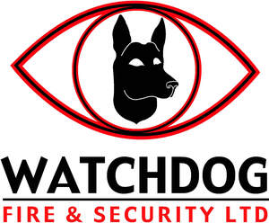

Trade Mark Journal No.2025/025 20 June 2025
UK00004210959 29 May 2025 (1,9,35,37,40,41,42,45)

- Class 1
- Fire extinguishing and fire prevention compositions; Compositions for fire extinguishing and prevention; Chemicals for use in fire extinguishing; Fire extinguishing chemicals; Fire extinguishing preparations; Fire extinguishing compounds; Fire extinguishing media; Fire extinguishing compositions; Extinguishing compositions (Fire -); Fire extinguishing foam compositions; Chemicals for use in fire extinguishing compositions; Chemicals containing additives having fire extinguishing properties.
- Class 9
- Burglar alarms; Alarms; Electronic burglar alarms; Anti-intrusion alarms; Security alarms; Alarm monitoring systems; Theft alarms; Alarm sensors; Electrical and electronic burglar alarms; Keypads for security alarms; Alarms and warning equipment; Intruder detection apparatus; Alarm installations; Audible alarms [other than for vehicles]; Alarm systems; Acoustic alarms; Sound alarms; Warning alarms [other than for vehicles]; Personal alarms; Personal security alarms; Electronic anti-theft alarms; Control panels for security alarms; Access control panels for security alarms; Security alarm systems [other than for vehicles]; Remote alarms [other than anti-theft for vehicles]; Intruder detecting apparatus [other than for vehicles]; Safety alarms [other than for vehicles]; Electric alarms; Gas alarms; Central alarms; Sound alarms, other than for vehicles; Anti-theft alarms [other than for vehicles]; Anti-theft alarms not for vehicles; Theft prevention alarms [other than for vehicles]; Intruder identification apparatus [other than for vehicles]; Alarm panels; Anti-theft alarm apparatus [other than for vehicles]; Sensors, detectors and monitoring instruments; Electronic personal alarm devices; Network monitoring cameras for surveillance; Wireless controllers to remotely monitor and control the function and status of security systems; Electrical alarm instruments (anti-theft -) [other than for vehicles]; Alarm central unit; Alarms (Fire -); Fire alarms; Smoke alarms; Alarms for the detection of inflammable gases; Smoke alarm testers; Locks [electric] with alarms; Remote controls for operating vehicle alarms; Electric alarms for smoke; Alarm signalling receivers; Electric alarms for fire; Personal alarm apparatus; Gas leak alarm systems; Ultrasonic wave type intruder sensors; Alarm bells, electric; Bells (Alarm -), electric; Electric alarm bells; Vapour monitoring apparatus for the detection of leaks; Alarm central units; Closed circuit TV [CCTV] software; Surveillance cameras; Closed circuit television systems (CCTV); Security cameras; TV cameras; Video surveillance cameras; Network surveillance cameras; Panoptic cameras; Cameras; Security surveillance robots; Conferencing cameras; Network monitoring cameras namely for surveillance; Motion-activated cameras; Video cameras; Security surveillance apparatus; Video surveillance systems; Network monitoring cameras; 360º video cameras; 360º cameras; Photographic cameras; Infrared cameras; Television cameras; Gimbals for cameras; Video cameras for broadcasting; Cameras [photography]; Digital video cameras; Mirrorless cameras; Lenses for video cameras; Digital cameras; 35mm cameras; TV simulators for deterring burglars; Digital single-lens reflex (DSLR) cameras; Electric and electronic video surveillance installations; Video Conference cameras; Photocells for use with security lighting; Motion sensors for security lights; Multipurpose cameras; TV monitors; Electronic article surveillance [EAS] software; Video conferencing equipment; Closed circuit television cameras; Fisheye lenses for cameras; Video conferencing monitors; Fire detection apparatus; Fire extinguishing systems; Fire extinguishing apparatus; Automatic fire extinguishing apparatus; Sprinkler apparatus [automatic] for fire extinguishing; Sprinkler systems for fire extinguishing; Fire detection software; Fire detectors; Fire extinguishing apparatus for automobiles; Fire detecting apparatus; Fire extinguishers; Fire protection apparatus; Fire fighting apparatus; Fire sensors; Fire sprinklers; Fire control apparatus; Smoke detection apparatus; Fire escapes; Sprinkler systems for fire protection; Fire hoses; Fire escape ladders; Fire escape ladders [safety equipment]; Fire hose; Hose (Fire -); Water leakage detection alarms; Fire blankets; Fire pumps; Jackets for protection against accidents, irradiation and fire; Clothing for protection against accidents, irradiation and fire; Trousers for protection against accidents, irradiation and fire; Fire resistant clothing; Balaclavas for protection against accidents, irradiation and fire; Leak detection apparatus; Fire buckets; Water sprinkling devices for fire control; Fire beaters; Gloves for protection against accidents, irradiation and fire; Infrared detection apparatus; Boots for protection against accidents, irradiation and fire; Socks for protection against accidents, irradiation and fire; Clothing for protection against fire; Fire (Clothing for protection against -); Shoes for protection against accidents, irradiation and fire; Footwear for protection against accidents, irradiation and fire; Fire resistant gloves; Smoke detecting apparatus; Detection apparatus; Scientific apparatus and instruments; Scientific and technological apparatus and instruments; Computer software; Computer software for computer aided software engineering; Computer antivirus software; Computer programming software; Computer graphics software; Computer software programs; Software for computers; Computer software for encryption; Computer interface software; Computer firewall software; Computer software applications; Computer operating software; Computer application software; Computer software for the monitoring of computer systems; Computer telephony software; Computer e-commerce software; Computer whiteboard software; Downloadable computer software; Educational computer software; Computer software packages; Interactive computer software; Computer software for education; Computer software platforms; Computer software for entertainment; Computer software [programmes]; Computer software for accessing computer networks; Computer hardware for use in computer-assisted software engineering; Computer software for advertising; Computer software downloadable from global computer networks; Computer software for testing vulnerability in computers and computer networks; Recorded computer software; Computer software, recorded; Software (Computer -), recorded; Downloadable computer security software; Computer software downloaded from the internet; Computer application software for TV; Computer application software for use with wearable computer devices; Software; Computer software downloadable from the internet; Programs (Computer -) [downloadable software]; Computer programs [downloadable software]; Computer software for use in computer access control; Computer software applications, downloadable; Downloadable computer software applications; Computer hardware; Hardware (Computer -); Downloadable computer utility software; Computers and computer hardware; Computer software adapted for use in the operation of computers; Computer software for the creation of firewalls; Computer operating system software; Software for tablet computers; Computer software supplied from the Internet; Computer software for database management; Computer software development tools; Computer software for the detection of threats to computer networks; Controlling software for computer printers; Computer software downloadable from global computer information networks; Communications processing computer software; Computer software programs for spreadsheet management; Network management computer software; Computer software for use in programming facsimile machines; Simulation software for use in digital computers; Computer software for accessing databases; Computer software for use in computer network access control; Downloadable computer software for blockchain technology; Operating computer software for main frame computers.
- Class 35
- Online retail store services and retail services connected with the sale of Safes, Locks, Keys, Lock lubricants, Fire extinguishing and fire prevention compositions, Compositions for fire extinguishing and prevention, Chemicals for use in fire extinguishing, Fire extinguishing chemicals, Fire extinguishing preparations, Fire extinguishing compounds, Fire extinguishing media, Fire extinguishing compositions, Extinguishing compositions (Fire -), Fire extinguishing foam compositions, Chemicals for use in fire extinguishing compositions, Chemicals containing additives having fire extinguishing properties, Burglar alarms, Alarms, Electronic burglar alarms, Anti-intrusion alarms, Security alarms, Alarm monitoring systems, Theft alarms, Alarm sensors, Electrical and electronic burglar alarms, Keypads for security alarms, Alarms and warning equipment, Intruder detection apparatus, Alarm installations, Audible alarms [other than for vehicles], Alarm systems, Acoustic alarms, Sound alarms, Warning alarms [other than for vehicles], Personal alarms, Personal security alarms, Electronic anti-theft alarms, Control panels for security alarms, Access control panels for security alarms, Security alarm systems [other than for vehicles], Remote alarms [other than anti-theft for vehicles], Intruder detecting apparatus [other than for vehicles], Safety alarms [other than for vehicles], Electric alarms, Gas alarms, Central alarms, Sound alarms, other than for vehicles, Anti-theft alarms [other than for vehicles], Anti-theft alarms not for vehicles, Theft prevention alarms [other than for vehicles], Intruder identification apparatus [other than for vehicles], Alarm panels, Anti-theft alarm apparatus [other than for vehicles], Sensors, detectors and monitoring instruments, Electronic personal alarm devices, Network monitoring cameras for surveillance, Wireless controllers to remotely monitor and control the function and status of security systems, Electrical alarm instruments (anti-theft -) [other than for vehicles], Alarm central unit, Alarms (Fire -), Fire alarms, Smoke alarms, Alarms for the detection of inflammable gases, Smoke alarm testers, Locks [electric] with alarms, Remote controls for operating vehicle alarms, Electric alarms for smoke, Alarm signalling receivers, Electric alarms for fire, Personal alarm apparatus, Gas leak alarm systems, Ultrasonic wave type intruder sensors, Alarm bells, electric, Bells (Alarm -), electric, Electric alarm bells, Vapour monitoring apparatus for the detection of leaks, Alarm central units, Closed circuit TV [CCTV] software, Surveillance cameras, Closed circuit television systems (CCTV), Security cameras, TV cameras, Video surveillance cameras, Network surveillance cameras, Panoptic cameras, Cameras, Security surveillance robots, Conferencing cameras, Network monitoring cameras namely for surveillance, Motion-activated cameras, Video cameras, Security surveillance apparatus, Video surveillance systems, Network monitoring cameras, 360º video cameras, 360º cameras, Photographic cameras, Infrared cameras, Television cameras, Gimbals for cameras, Video cameras for broadcasting, Cameras [photography], Digital video cameras, Mirrorless cameras, Lenses for video cameras, Digital cameras, 35mm cameras, TV simulators for deterring burglars, Digital single-lens reflex (DSLR) cameras, Electric and electronic video surveillance installations, Video Conference cameras, Photocells for use with security lighting, Motion sensors for security lights, Multipurpose cameras, TV monitors, Electronic article surveillance [EAS] software, Video conferencing equipment, Closed circuit television cameras, Fisheye lenses for cameras, Video conferencing monitors, Fire detection apparatus, Fire extinguishing systems, Fire extinguishing apparatus, Automatic fire extinguishing apparatus, Sprinkler apparatus [automatic] for fire extinguishing, Sprinkler systems for fire extinguishing, Fire detection software, Fire detectors, Fire extinguishing apparatus for automobiles, Fire detecting apparatus, Fire extinguishers, Fire protection apparatus, Fire fighting apparatus, Fire sensors, Fire sprinklers, Fire control apparatus, Smoke detection apparatus, Fire escapes, Sprinkler systems for fire protection, Fire hoses, Fire escape ladders, Fire escape ladders [safety equipment], Fire hose, Hose (Fire -), Water leakage detection alarms, Fire blankets, Fire pumps, Jackets for protection against accidents, irradiation and fire, Clothing for protection against accidents, irradiation and fire, Trousers for protection against accidents, irradiation and fire, Fire resistant clothing, Balaclavas for protection against accidents, irradiation and fire, Leak detection apparatus, Fire buckets, Water sprinkling devices for fire control, Fire beaters, Gloves for protection against accidents, irradiation and fire, Infrared detection apparatus, Boots for protection against accidents, irradiation and fire, Socks for protection against accidents, irradiation and fire, Clothing for protection against fire, Fire (Clothing for protection against -), Shoes for protection against accidents, irradiation and fire, Footwear for protection against accidents, irradiation and fire, Fire resistant gloves, Smoke detecting apparatus, Detection apparatus, Scientific apparatus and instruments, Scientific and technological apparatus and instruments, Computer software, Computer software for computer aided software engineering, Computer antivirus software, Computer programming software, Computer graphics software, Computer software programs, Software for computers, Computer software for encryption, Computer interface software, Computer firewall software, Computer software applications, Computer operating software, Computer application software, Computer software for the monitoring of computer systems, Computer telephony software, Computer e-commerce software, Computer whiteboard software, Downloadable computer software, Educational computer software, Computer software packages, Interactive computer software, Computer software for education, Computer software platforms, Computer software for entertainment, Computer software [programmes], Computer software for accessing computer networks, Computer hardware for use in computer-assisted software engineering, Computer software for advertising, Computer software downloadable from global computer networks, Computer software for testing vulnerability in computers and computer networks, Recorded computer software, Computer software, recorded, Software (Computer -), recorded, Downloadable computer security software, Computer software downloaded from the internet, Computer application software for TV, Computer application software for use with wearable computer devices, Software, Computer software downloadable from the internet, Programs (Computer -) [downloadable software], Computer programs [downloadable software], Computer software for use in computer access control, Computer software applications, downloadable, Downloadable computer software applications, Computer hardware, Hardware (Computer -), Downloadable computer utility software, Computers and computer hardware, Computer software adapted for use in the operation of computers, Computer software for the creation of firewalls, Computer operating system software, Software for tablet computers, Computer software supplied from the Internet, Computer software for database management, Computer software development tools, Computer software for the detection of threats to computer networks, Controlling software for computer printers, Computer software downloadable from global computer information networks, Communications processing computer software, Computer software programs for spreadsheet management, Network management computer software, Computer software for use in programming facsimile machines, Simulation software for use in digital computers, Computer software for accessing databases, Computer software for use in computer network access control, Downloadable computer software for blockchain technology, Operating computer software for main frame computers.
- Class 37
- Installation of security system; Installation of security systems; Installation of residential security apparatus; Installation of security and safety equipment; Installation of vehicle security devices; Maintenance and repair of security systems; Maintenance and repair of security installations; Information services relating to installation of security systems; Advisory services relating to the installation of security and safety equipment; Maintenance and servicing of security alarms; Information services relating to maintenance of security systems; Vehicle lock repairs; Installation of safes; Maintenance and repair of safes; Emergency vehicle repair services; Emergency locksmith; Emergency locksmiths; Locksmithing [repair]; Locksmithing repair; Lock repair; Lock repair services; Repair of locks; Garage services for automobile repair; Alarm, lock and safe installation, maintenance and repair; Garage services for vehicle repair; Fire extinguisher recharging services; Burglar alarm repair; Repair of security locks; Locks (Repair of security -); Burglar alarm installation and repair; Vehicle repair services; Repair of alarms; Alarms (Repair of -); Fire alarm repair; Fire alarms (Repair of -); Fire alarm installation and repair; Maintenance and repair services relating to door closers; Installation of door fittings; Installation of door openers and closers; Services for the installation of alarms; Vehicle upholstery and repair services; Installation, maintenance and repair of burglar alarms; Repair or maintenance of fire alarms; Maintenance and repair of fire alarm systems; Vehicle breakdown repair services; Maintenance and repair services relating to automatic door equipment; Garage services for the maintenance and repair of motor vehicles; Garage services for motor vehicle repair; Maintenance and repair of fire evacuation systems; Service stations for the repair of vehicles; Garage services for vehicle maintenance; Vehicle breakdown assistance [repair]; Vehicle maintenance and repair; Vehicle repair and maintenance; Motor vehicle maintenance and repair; Motor vehicle repair; Arranging of vehicle repairs; Motor vehicle maintenance and repair services; Motor vehicle repair and maintenance services; Vehicles maintenance and repair; Maintenance and repair of vehicles; Repair and maintenance of vehicles; Repair and maintenance of motor vehicles; Maintenance and repair of motor vehicles; Vehicle maintenance; Maintenance (Vehicle -); Installation, changing, replacement and repair of locks; Installation, changing, replacement and repair of door locks; Installation, changing, replacement and repair of electronic locks; Installation of lock fittings; Installation of locks; Installation of wireless locks; Safe maintenance or repair; Safe maintenance and repair; Providing information relating to safe maintenance and repair; Installation and fitting of digital and standalone electronic locks.
- Class 40
- Cutting of replacement keys; Key duplicating; Key cutting; Key replacement; Key programming; Key extraction.
- Class 41
- Training; Training of personnel to ensure maximum security protection; Training in the operation of security systems; Training services relating to security systems; Training in the operation of installing security systems; Training services relating to installing security systems.
- Class 42
- Analysis, design and testing of security services; Programming of Internet security programs; Provision of computer security risk management programs; Rental of Internet security programs; Design and development of Internet security programs; Computer security system monitoring services; Authentication services for computer security; Data security services [firewalls]; Data security services; Monitoring of computer systems for security purposes; Computer programming services for electronic data security; Computer security consultancy; Provision of security services for computer networks, computer access and computerised transactions; Maintenance of computer software relating to computer security and prevention of computer risks; Design and development of electronic data security systems; Consultancy in the field of security software; Consultancy in the field of computer security; Updating of computer software relating to computer security and prevention of computer risks; Data security consultancy; Security surveys; Scientific and technological services; Design and development of computer hardware and software; Cybersecurity services.
- Class 45
- Security services; Security monitoring services; Security guard services; Physical security services; Security services for buildings; Security services for the protection of individuals; Security services for the protection of property; Security inspection services for others; Security guard services for buildings; Public events security services; Security services for the protection of property and individuals; Security services for the physical protection of individuals; Safety, rescue, security and enforcement services; Security guard services for the protection of property and individuals; Electronic monitoring services for security purposes; Surveillance services; Consulting services in the field of national security; Providing information relating to security guard services; Security consultancy; Guard services; Security services for the physical protection of tangible property; Security services for the physical protection of tangible property and individuals; Physical security consultancy; Security guarding for facilities; Monitoring of security systems; Bodyguard services; Providing reconnaissance and surveillance services; Rental of equipment for safety, rescue, security and enforcement; Security assessment of risks; Rental of security surveillance equipment; Rental of security surveillance apparatus; Security guarding of facilities via remote monitoring system; Rental of security apparatus; Monitoring burglar and security alarms; Monitoring of burglar and security alarms; Security guarding of facilities via remote monitoring systems; Guard services for preventing the intrusion of burglars; Identification marking for dogs for security purposes; Alarm monitoring services; Key holding services; Tracing of lost keys; Opening of security locks; Locks (Opening of security -); Dog security; Security services for hotels, corporate offices and homes; Mobile patrol security services; Home security alarm monitoring; Monitoring alarms; Monitoring of alarms; Contract guarding; Body guarding; Body guarding (Personal -); Personal body guarding; Night guards; Guards (Night -); Night guard services; Day and night guards; Opening of door locks; Opening of locks [locksmiths' services]; Surveillance services by drone; Rental of video surveillance cameras; Closed-circuit surveillance; Night watchman services; Security services using K9 units; Personal bodyguarding; Providing information relating to personal body guarding services; Information services relating to safety; Security guard services for events; Security guard services for festivals; Security guard services for building/construction sites; Opening of car locks; Door opening service; Opening of safes; Microchip security services for pets; Consultancy services relating to health and safety; Police services; Bailiff services (legal services); Fingerprinting services; Advisory services in relation to safety; Concierge services; Consultancy services in the field of the safety needs of commercial and industrial companies; Police protection; Hotel concierge services; Security screening of baggage; Baggage inspection for security purposes; Inspection (Baggage -) for security purposes; Medical alarm monitoring; Monitoring fire alarms; Fire fighting services; Security marking of goods; Security marking of documents; Animal protection services.
Watchdog Fire & Security Limited
Representative: Carter Bond Solicitors